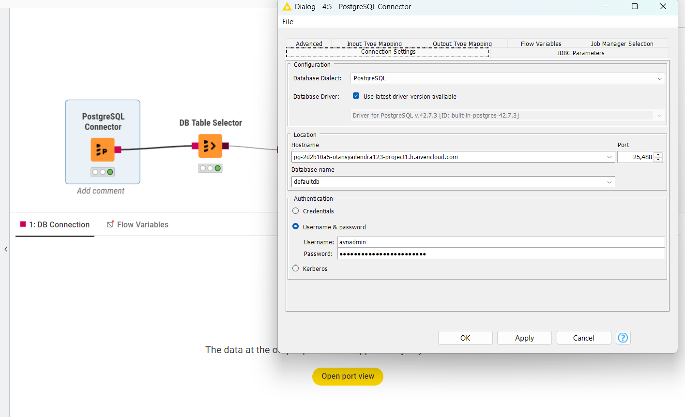
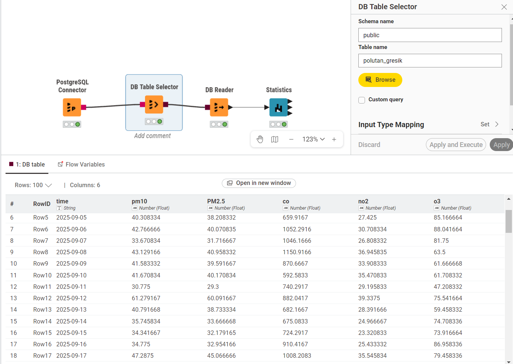
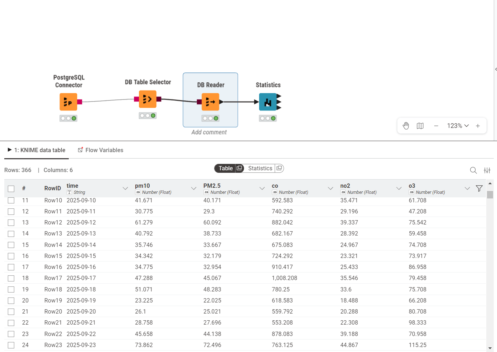
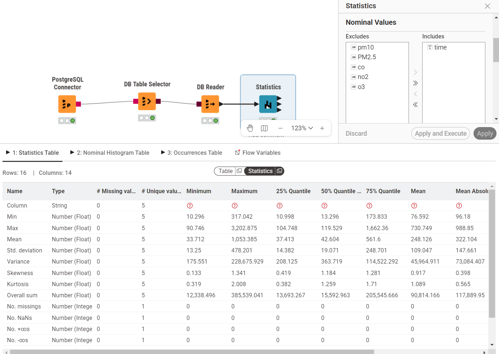

Analisis Time Series: Persiapan Data Polutan Gresik#
Dalam proyek ini, kita menggunakan data historis kualitas udara (polutan) yang direkam berdasarkan urutan waktu. Sebelum melakukan pemodelan dan peramalan tren time series, data mentah dikelola di dalam cloud database agar proses penarikan data ke sistem analitik menjadi lebih efisien dan terpusat.
Dokumen ini mencakup alur lengkap mulai dari migrasi data awal hingga pengolahan dasar menggunakan KNIME Analytics Platform.
1. Migrasi Data ke Aiven PostgreSQL (via DBeaver)#
Tahap pertama bertujuan untuk memindahkan data historis (polutan_gresik_2025_2026.csv) ke dalam layanan database Aiven agar siap diakses secara daring.
Pembuatan Struktur Tabel#
Karena ini adalah analisis runtun waktu, tipe data untuk kolom waktu (time) wajib didefinisikan sebagai TIMESTAMP. Melalui SQL Editor di aplikasi DBeaver, struktur tabel penampung dibuat menggunakan perintah berikut:
CREATE TABLE polutan_gresik (
time TIMESTAMP,
"PM10" NUMERIC,
"PM2.5" NUMERIC,
"CO" NUMERIC,
"NO2" NUMERIC,
"O3" NUMERIC
);
Konfigurasi Koneksi dan Import CSV Koneksi Database: DBeaver dihubungkan ke server Aiven PostgreSQL dengan memasukkan Service URI dari dashboard Aiven. Parameter sslmode=require wajib ditambahkan pada pengaturan URL JDBC untuk menjamin keamanan koneksi (SSL).
Import Data: Setelah terhubung ke database defaultdb dan tabel berhasil dibuat pada skema public, proses import data dilakukan dengan menu Import Data (format CSV) langsung pada tabel polutan_gresik.
Verifikasi: Mengecek total baris data yang berhasil diunggah dengan menjalankan query:
SELECT COUNT(*) FROM polutan_gresik;
2. Integrasi dan Pengolahan Time Series di KNIME#
Setelah data siap di cloud database, tahapan selanjutnya adalah menarik data tersebut ke ruang kerja lokal untuk pra-pemrosesan dan analisis tren.
Menghubungkan KNIME ke Database#
Untuk menarik data secara langsung dari cloud, alur koneksi (workflow) di KNIME dibangun menggunakan beberapa node utama secara berurutan:
PostgreSQL Connector: Diatur menggunakan detail host, port, dan kredensial server Aiven. Pada tab JDBC Parameters, properti tambahan
sslmodedengan nilairequiredikonfigurasi agar node dapat terhubung.
(Keterangan: Jendela konfigurasi PostgreSQL Connector di mana kredensial database dimasukkan)DB Table Selector: Diarahkan ke skema
publicuntuk menyeleksi tabelpolutan_gresik.
(Keterangan: Keseluruhan workflow KNIME beserta cuplikan hasil pemilihan tabel)DB Reader: Mengeksekusi penarikan data dari database ke dalam memori KNIME agar siap diolah lebih lanjut.

(Keterangan: Cuplikan data polutan yang berhasil ditarik ke dalam KNIME melalui node DB Reader)Statistics: Node ini ditambahkan setelah DB Reader untuk memverifikasi data dan melihat ringkasan statistik deskriptif dasar, seperti nilai minimum, maksimum, dan rata-rata (mean).

(Keterangan: Output node Statistics yang menampilkan perhitungan statistik untuk setiap jenis polutan)
Pra-pemrosesan Time Series#
Setelah data berhasil ditarik, langkah pra-pemrosesan yang dilakukan untuk menyesuaikan format runtun waktu meliputi:
String to Date&Time: Digunakan untuk memastikan kolom time dikenali sebagai format waktu yang valid oleh KNIME, sehingga pengurutan kronologis data tetap konsisten.
Missing Value: Menangani data polutan yang mungkin kosong akibat kegagalan sensor pada hari-hari tertentu, umumnya menggunakan metode interpolasi linear agar pola data tidak terputus.
Time Series Aggregation / GroupBy: Mengelompokkan data berskala harian menjadi rata-rata mingguan atau bulanan untuk mempermudah pengamatan tren jangka panjang.